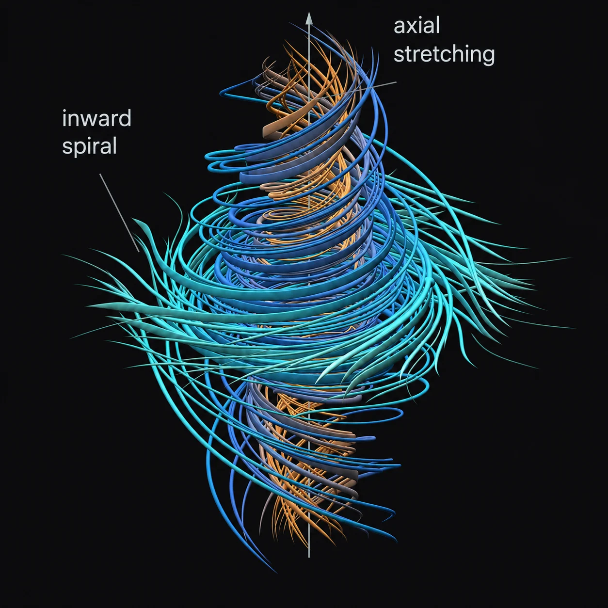
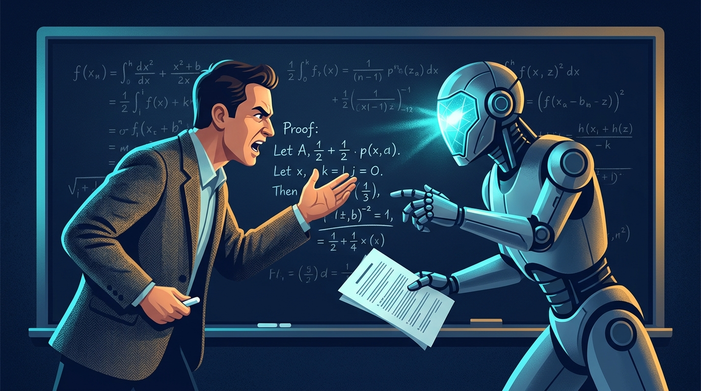
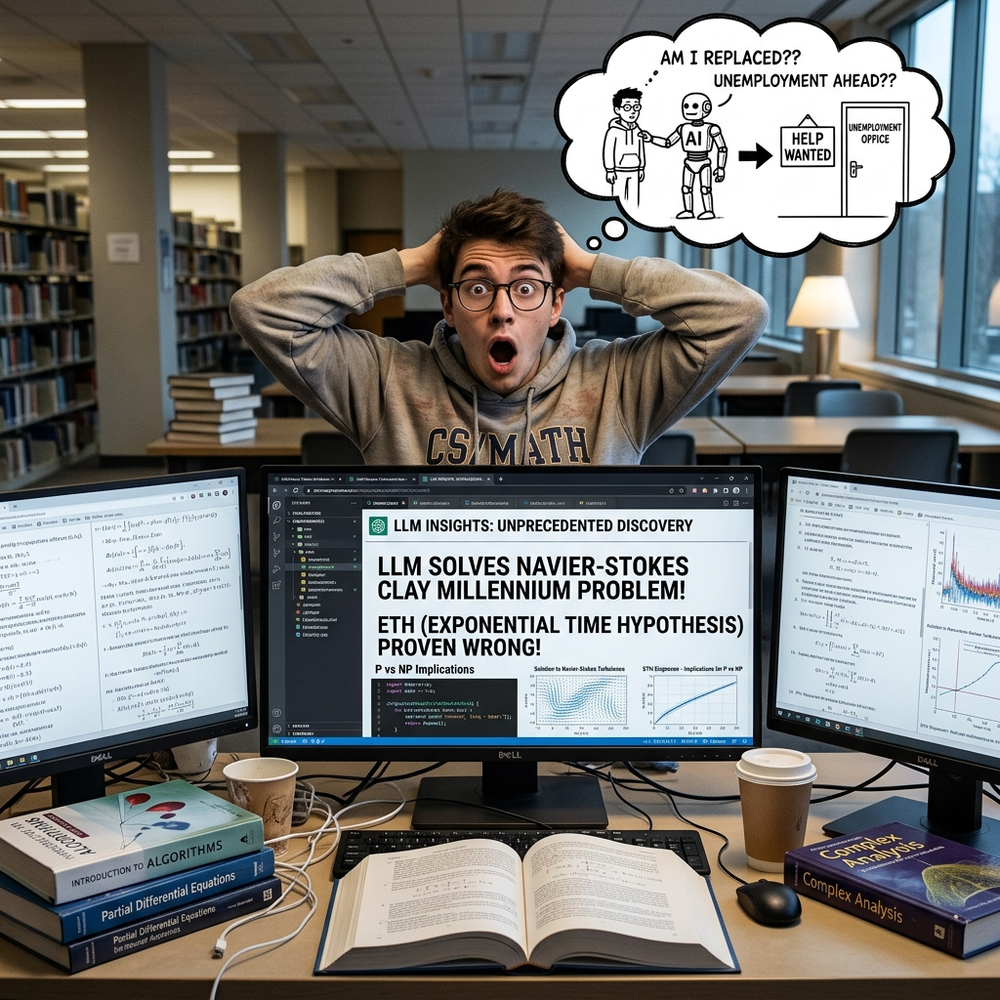

What happened?An autumn of AI proofs — 2024 to 2026
The breakthrough timeline · five milestones in six weeks
AlphaGeometry solves Olympiad geometry without human demonstrations (Trinh et al., 2024).
AlphaProof reaches IMO-silver level, exploring proofs inside the Lean language (Hubert et al., 2026).
OpenAI claims a finite-time blow-up for the forced 3D Navier–Stokes equations — Millennium-Prize-scale (OpenAI, 2026a).
OpenAI releases results on the quasi-Riemann hypothesis (OpenAI, 2026c; Quanta Magazine, 2026b).
One announcement, three landmarks: Kakeya-related analysis, a disproof of ETH, Yang–Mills existence results (OpenAI, 2026b).
Each was expected to need decades. The compressed timeline itself is the story.
Case A · Navier–Stokes · the problem AI chose — and the one it left behind
- Claimed: blow-up in the forced 3D Navier–Stokes equations — a US$1M Clay Millennium Problem. A 160-page write-up plus a Lean machine-check (OpenAI, 2026a).
- How: one prompt → thousands of debating agents → Lean check. Industrialised search, not a "genius" step (OpenAI, 2026a).
- Groundbreaking: the first Millennium-scale claim with machine verification — no longer dismissible as toys (Quanta Magazine, 2026a).
- The sting: Clay still lists it as open; experts call it "a difficult read", its framing "meaningfully imprecise" (Scientific American, 2026).

Why is it hard to trust?Three words that decide everything
Verified ✓ ≠ Understood ✗ ≠ Accepted ✗
| Case study | Verified? | Understood? | Accepted? |
|---|---|---|---|
| Navier–StokesOpenAI · Sept 2026 | ✓Lean checked every logical step (OpenAI, 2026a) | ✗"the most horrendous [proof] I have ever read" — Buckmaster (Yahoo Tech, 2026) | ✗Clay still lists the problem as open (Scientific American, 2026) |
| ETHOpenAI · Oct 2026 | ✓Lean-verified disproof, published openly (OpenAI, 2026b) | ✗"two or three alien-looking parts" — R. Williams (Fernholz, 2026) | ✗community examination has only just begun (OpenAI, 2026b) |
What convinced experts in both cases was not the writing — it was the machine. Authority is migrating from "understood by humans" to "verified by machines" (Avigad, 2008).
What do the human experts say?

The most horrendous [proof] I have ever read.
Tristan Buckmaster · Princeton, on the Navier–Stokes write-up (Yahoo Tech, 2026)
Two or three alien-looking parts… the whole community needs to work on together.
Ryan Williams · MIT, on the ETH disproof (Fernholz, 2026)
It's not anymore a matter of clearly verifiable mathematical facts.
Camillo De Lellis · IAS (Scientific American, 2026)
Technically, all the plot lines are resolved, but most of the value of the experience was lost.
Terence Tao · UCLA — comparing a rushed proof to watching only a film's start and end (IBM Think, 2026)
…he would be publicly scooped at any opportunity. Instead of contacting him to work with him, … the people at OpenAI chose to do this.
Levent Alpöge · Anthropic, on OpenAI's Yang–Mills credit; hours later Anthropic released its own ETH refutation (X, via Fernholz, 2026)
Four of five voices are experts engaging seriously with AI output — neither dismissal nor surrender. That is the new normal.
Think critically — three questions for the next AI breakthrough
Who framed the problem?
Whoever chooses which version counts as "solved" holds real power. OpenAI chose the forced N–S case; the unforced case remains open (OpenAI, 2026a; Scientific American, 2026).
Who gets credit?
Priority disputes erupted within days in both cases: Buckmaster–Alpöge over prior work; then OpenAI vs Anthropic — two rival ETH refutations, same day (Yahoo Tech, 2026; Fernholz, 2026).
Who checks the checkers?
Lean can't judge whether the statement matches the real problem, nor decide priority — that stays human: shepherd groups, open letters, a funded conference (OpenAI, 2026b; Fernholz, 2026).
What now?A second case — and what we take away
Case B · Exponential Time Hypothesis · a 27-year-old cornerstone, refuted in days
- Claimed: ETH (1999) says hard logic puzzles provably need exponential time — bedrock of hundreds of hardness results (Impagliazzo & Paturi, 2001). On 26 Oct 2026, OpenAI's system proved ETH false (OpenAI, 2026b).
- How: a 66-page AI disproof; Lean checked it the next day; ETH's own inventors lead the examination (OpenAI, 2026b).
- Groundbreaking: a decade-worthy result, unsolicited — Williams now puts "a little more weight on the plausibility of P = NP" (Fernholz, 2026).
- The Anthropic twist: hours later, Anthropic published its own ETH refutation, credited to Claude — two rival AIs, two refutations, neither accepted yet (Anthropic, 2026; Fernholz, 2026).

Takeaway · complement, not replacement
Authority is migrating, not disappearing: from "a proof you can read" to "a proof a machine can check — that a community still must accept."
- Humans keep what matters most: choosing problems, judging meaning, governing credit (OpenAI, 2026b).
- AI can also sharpen intuition: AI-guided mathematicians found new knot-theory results (Davies et al., 2021).
- The skill to build: not out-writing AI, but asking what AI cannot frame — which problem matters, and what counts as understanding?